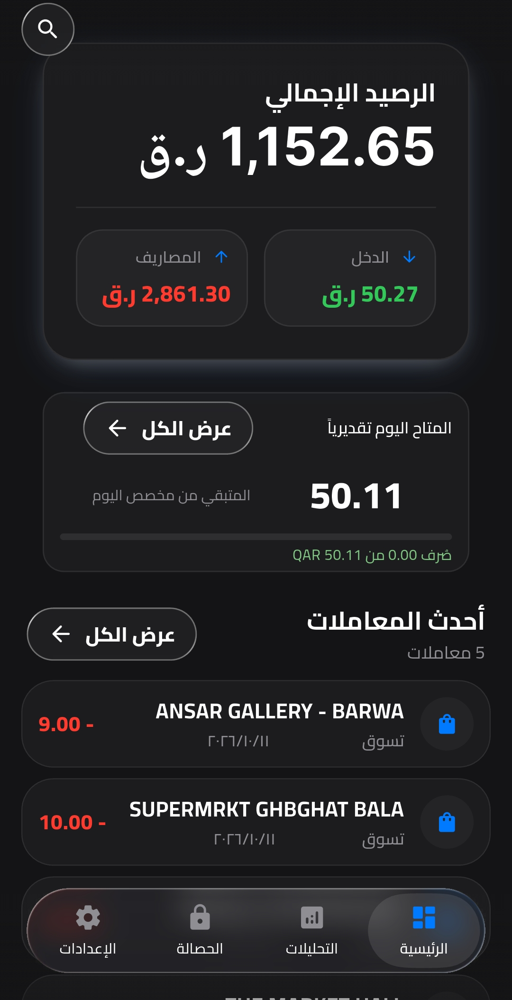

رسائلك تصير أرقام واضحة
قراءة الرسائل البنكية وتصنيف العمليات محلياً. بدون رفع رسائلك إلى أي خادم.
تحليل SMS محلي 100% خاص
مصاريفك والتزاماتك والمتاح للصرف، في مكان واحد. QPay يرتّب رسائلك البنكية، وبياناتك تبقى على جهازك.

أدوات بسيطة تهتم بالتفاصيل، عشان تركّز على حياتك.
قراءة الرسائل البنكية وتصنيف العمليات محلياً. بدون رفع رسائلك إلى أي خادم.
رصيد آمن للصرف بعد حساب الفواتير والالتزامات. تعرف وش لك، ووش عليك.
اكتشاف تلقائي للدفعات المتكررة، لتشوف اشتراكاتك ومواعيدها في مكان واحد.
قسّم الفاتورة مع أصحابك، بالتساوي أو حسب نصيب كل شخص. بكل وضوح.
اختر رسالة تجريبية من البنك الأهلي، وشوف كيف QPay يفهمها.
هذه أمثلة توضيحية، وتتم المعالجة داخل متصفحك.
التحليل على جهازك، بدون مشاركة الرسائل أو ربط حسابك البنكي. أنت صاحب بياناتك.
يمكنك إلغاء إذن التثبيت من هذا المصدر بعد الانتهاء. على الكمبيوتر، انقل الملف إلى جهاز Android أولاً.